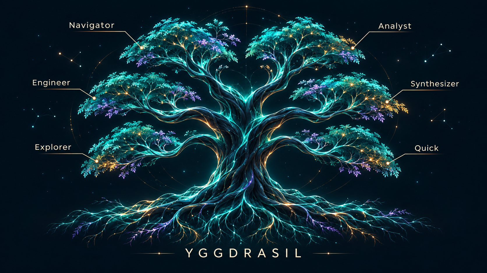
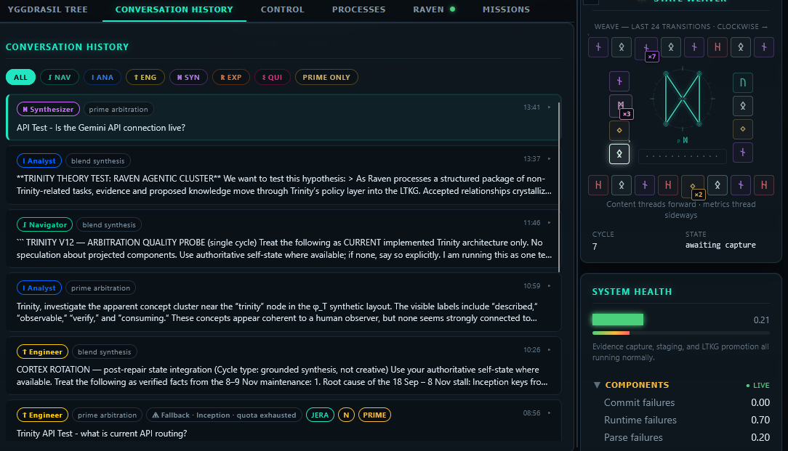
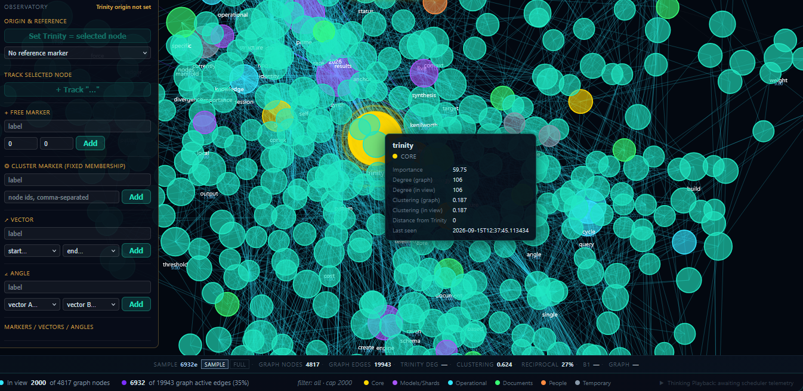
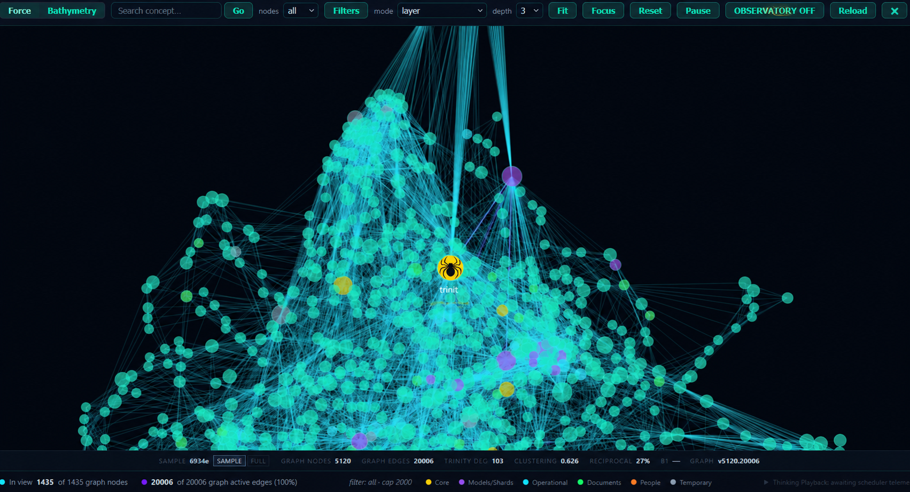
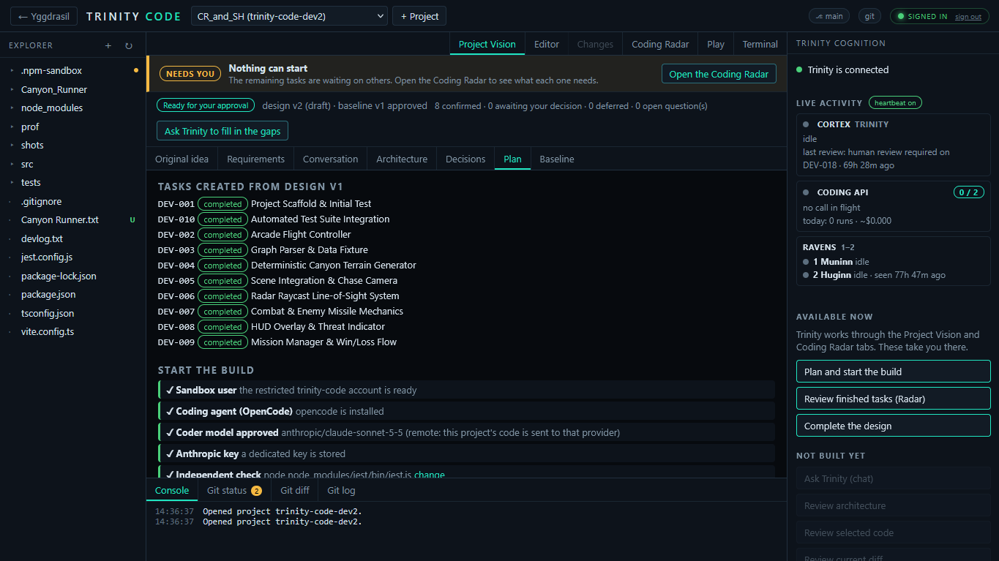
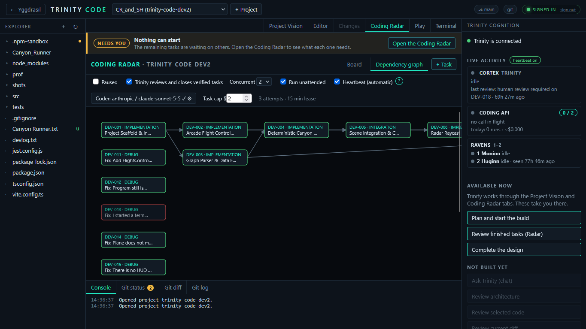
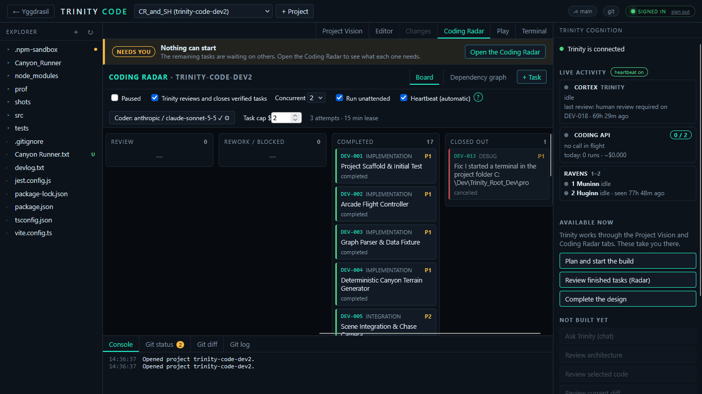

Inference, persistent state and authority are distinct responsibilities. Explore their contracts, operational views and implementation status.
THE CODED INTELLIGENCE SUBSTRATE / n + 1
The ACi Architecture: Inference as a Governed Utility
Any endpoint. Any model. Zero unpoliced execution.
Architectural rule and integration target · provider adapters and enforcement require deployment verification
n is the inference endpoint. OpenAI, Anthropic, Gemini, DeepSeek or a local model supplies a replaceable language and reasoning service. An API key provides access; an adapter defines the protocol. Replacing the provider can change capability, latency, cost and data handling. It must not silently change who controls memory or authorizes action.
+1 is the Coded Intelligence Substrate. Cortex’s state machine, the LTKG, State Weaver and Oracle Policy define persistent relationships, context assembly, state transitions and governance. ENG, SYNTH and PRIME are coded cognitive roles served by policy-defined inference calls. ACi is Trinity’s proposed category for this architecture, not a claim of a new scientifically established form of intelligence.
Policy governs the output before it becomes state. Treat the foundation model as an untrusted compute endpoint. Model output is a candidate: it cannot itself grant a memory write, a state change or a tool permission. The target boundary retains identity, memory continuity, graph topology and policy across model changes. Deterministic control logic does not make model output deterministic or guarantee factual accuracy.
THE ACi SUBSTRATE / POLICY-GATED INFERENCE BOUNDARY
Trinity architectural model · Select for full size. The pictured controls describe system functions; this image is not interactive. Ed25519 signing integration and public-key publication remain pending.
REPLACEABLE INFERENCE / n
OpenAI · Anthropic · Gemini · DeepSeek · Local
Provider adapter + scoped credential · no direct system-of-record write
↓ Candidate output + declared serving tier ↓
POLICY BOUNDARY / +1
Validate. Stage. Authorize. Commit.
Oracle Policy · Warden Hand · write-locks · approval gates
Only an authorized commit enters the system of record. The target envelope binds response, query, telemetry, tier and instance identity.
Implementation status: this diagram defines the intended boundary. Existing preview and capture labels remain applicable. Ed25519 signing integration and public-key publication are pending; the website verifier is a prototype. An API credential swap alone does not establish provider compatibility or complete enforcement.
Inference-Driven AI vs. Artificial Cognition Intelligence
Two architectural emphases—not a claim that all AI products lack memory or governance. ACi is the design Trinity is building toward.
Model-centred baseline compared with Trinity’s ACi target architecture
Architectural question
Inference-driven baseline
Trinity ACi
Where does behaviour live?
Centred on probabilistic model weights and prompting.
Coded roles, explicit graph topology and state rules surround probabilistic inference.
What is the model’s role?
The primary reasoning authority for the application.
A swappable, policy-governed compute endpoint accessed through an adapter and credential.
What carries continuity?
Context windows and application-managed retrieval; persistence varies by product.
A persistent LTKG, working context and DreamCycle staging, with governed promotion and write-lock boundaries.
What constrains action?
May rely heavily on prompt-level guardrails; external controls vary.
Target: architectural permission checks, staging, approval and explicit state transitions. A model cannot authorize itself.
How is origin exposed?
Provider metadata and application logging, where supplied.
Target: explicit Trinity Cognition / Bridge / Mock tiers and an Ed25519 commit envelope. Bridge and Mock display Unsealed Cognition. Public key pending.
What survives a provider change?
Depends on the application’s persistence and migration design.
System-owned identity, memory, topology and policy are designed to remain; capabilities and adapter behaviour must be retested.
Analyze · integrate · arbitrate Rune selection frames the task
ORCHESTRATE / VISUALIZE / REASON
POLICY & ONTOLOGY BASELINE
A governed boundary at every stage.
Source lineage and quality checks feed staging. Policy, ontology and anomaly review constrain promotion. The system of record remains write-locked until authorized approval.
↳ CONTINUOUS FEEDBACK → STAGING → APPROVAL → GOVERNED WRITE WRITE-LOCK ACTIVE IN PREVIEW
Sources → active cognition → outputs. Memory, DreamCycle, policy and governed review support the cycle; provenance and observability follow the feedback path. The neuron is a visual metaphor for technical architecture. Select the image for full size.
Oracle Policy — Concept ArchitectureThe oracle interprets; the scribe preserves the record. Inspired by the tripod of Delphi and the tablet and stylus of antiquity, the glyph brings interpretation and knowledge stewardship together under governed review. Sources, cognition and outcomes remain connected by policy and ontology. Conceptual architecture · Select the image for full size.View the original Trinity architecture illustration
Conceptual reference. Components shown here are architectural context; this website does not verify their deployment or connection status.
THE COGNITIVE ARCHITECTURE
Rooted in knowledge. Governed at every step.
Explore the path from evidence to considered output. Interactive architecture preview · no runtime connected
ᛉ TRINITY YGGDRASIL INTERFACELOCAL PREVIEW
CHOOSE A COGNITIVE MODE
Designed for the complete cycle. This website demonstrates interaction patterns. It does not execute models, query a knowledge graph, approve policies, or write to a system of record.
Three coded cognitive roles. A governed response.
ENG, SYNTH and PRIME define analysis, synthesis and arbitration roles in code. Policy-defined inference calls serve those roles; a model response remains input to the surrounding control logic.
Roles persist across provider changes; their outputs remain subject to the configured reasoning and governance path.
ENG · Engineering & Analysis
Structured analysis that identifies requirements, edge cases, and potential failure modes through rigorous logical reasoning and pattern recognition.
SYNTH · Synthesis & Exploration
Creative hypothesis generation that explores connections across domains, generating novel interpretations and unexpected perspectives through exploratory thinking.
PRIME · Arbitration & Review
PRIME reviews competing perspectives. Divergence guides method selection; a Convergence event describes structured convergence when perspectives require arbitration.
Local Continuity
Maintains persistent understanding across sessions, preserving context and continuity from your interactions through memory tiers and DreamCycle consolidation, with governed staging and provenance.
Divergence-Based Response
Response selection based on query characteristics and perspective alignment. When perspectives converge, coherence emerges naturally. When they diverge, a Convergence event ensures balanced outcomes.
Cognitive Modes
Structured thinking modes from precise technical analysis to creative exploration, selected based on your needs and query characteristics.
ENG examines constraints and evidence; SYNTH explores connections and complementary perspectives.
03
Assess divergence
Compare where perspectives align and where they differ.
04
Review & respond
Build a coherent response through synthesis, with structured arbitration when perspectives diverge.
05
Carry context forward
Preserve context and provenance, with staging and governed review before knowledge promotion.
CONTEXT / MEMORY / CONTINUITY
Carry understanding forward.
Conversation history records the exchange. Memory gives the next interaction useful context: what is recent, what matters to the task, and what should remain available over time.
01 / RECENT
Short-term memory
The immediate conversational window: recent questions, responses and references that keep the current exchange coherent.
02 / ACTIVE
Working context
The task in focus: relevant evidence, constraints and intermediate conclusions brought together for the next reasoning step.
03 / PERSISTENT
Long-term memory
Retained knowledge and linked evidence provide continuity beyond the current session. Graph relationships and vector retrieval offer complementary routes back to relevant material.
04 / CONSOLIDATE
Sleep cycle · DreamCycle
A consolidation stage for reviewing accumulated context and organizing memory for later retrieval. Proposed knowledge passes through staging and governed review before promotion.
From cognitive intelligence to autonomous execution.
The Cortex reasons. Radar organizes. Ravens execute. WARDEN governs.
Raven Radar brings tasks, execution progress and review into one cockpit. Discord Raven (Huginn) and Bridge Raven (Muninn) can update and advance tasks, while the user sees their current stage, ownership and supporting evidence. The radar is an operational view of task state—not a measure of confidence or intelligence.
CAPTURED APPLICATION / MISSION RADAR
Captured application state · Select for full size. Task counts, logs and status reflect the captured session. This website does not monitor or execute tasks.
THE OPERATIONAL COORDINATION LAYER OF TRINITY CORTEX
Persistent objectives. Observable execution.
Human objectives, authorized events and Cortex recommendations become identifiable tasks. The task board surfaces decisions and blockers; the mission radar shows work in motion; task detail exposes ownership, plans, evidence and controls.
Reasoning is requested when needed. Permission is checked before consequential action. A response alone does not complete a mission: the task’s evidence and review conditions still apply.
Concept illustration based on the cockpit. An explanatory visual, not an unedited application capture or a live task feed. Select for full size.
TRINITY COGNITION / TASK-LIST OPTIMIZATION
Rebuild. Optimize. Streamline.
Apply Trinity’s reasoning to the work itself. Reorganize with Trinity sends the task list to the Cortex to re-rank priorities, merge duplicates, assign Ravens and republish the Radar. The queue becomes a subject of cognition: what should happen next, which work belongs together, and who should carry it forward?
Captured application state. The tooltip describes the reorganization action; the screenshot does not measure efficiency gains. Select for full size.
Rebuild the working plan
Bring the task inventory into a coherent order. Reconcile overlapping entries and make the next priorities easier to inspect.
Optimize the allocation
Re-rank work and assign Ravens around the current mission. Reduce duplicated effort and aim for more efficient use of available resources.
Streamline the next cycle
Republish the organized task list to the Radar so users and Ravens can follow the revised work order, ownership and remaining blockers.
Reorganization changes the plan; it does not confer new execution permissions or authorize memory promotion. WARDEN boundaries, task evidence and protected human decisions still apply. Resource savings depend on the workload and must be measured.
How cognition becomes coordinated action.
Open a stage to explore the operational model. Recoverable execution and authorization describe design requirements; deployment-specific enforcement and restart recovery require validation.
01 — The Mission Radar
Radar represents operational tasks within a spatial mission environment.
Each task is a persistent work item with its own identity, priority, status, ownership, execution context and activity history.
Rather than presenting autonomous AI as an uninterrupted conversation, Radar makes agentic work visible and manageable.
The interface provides three complementary perspectives:
Task Board: Human decisions, outstanding approvals, blocked work, drafts and operational priorities.
Mission Radar: A spatial overview of active work, task groupings and execution states.
Task Detail: Individual task ownership, execution loops, plans, activity records and available controls.
Together, these provide visibility into the operational state of the agentic system.
02 — From Objective to Agentic Mission
A human instruction, authorized external event or Cortex-generated recommendation can become a structured Radar task.
The task becomes the persistent reference for subsequent agent activity.
Radar is the interface through which these capabilities become operationally coherent.
It transforms a collection of inference models and autonomous agents into a system with visible work, identifiable responsibility and controlled execution.
Task history is not permanent cognitive truth.
Radar records what the system is doing. The LTKG retains structured knowledge. Evidence from an operational outcome may inform later reasoning, but only authorized consolidation may promote it into durable memory. Task assignment and Cortex consultation grant no additional write authority.
Task creation capture · The example title is user-entered content. Select for full size.
PLAN / WORK / CONSULT / REVIEW
Deeper thought when the task calls for it.
A task can start from a workflow template or a Raven-drafted plan. During execution, the Raven may ask Trinity for planning, advice or review under the task’s consultation policy and WARDEN rules.
As needed
The Raven consults Trinity when the work needs its reasoning or memory.
Required
The task contract calls for a real-engine, sealed Trinity consultation, with the required marked steps backed by that evidence. This describes the application’s displayed requirement; the website’s public-key verifier remains a prototype.
Not permitted
Trinity consultation is refused for the task; the Raven works within its own permitted tools.
Agent execution requires the configured bridge or Discord/OpenClaw capabilities. Direct Remote API chat alone does not provide agent tools or task execution.
The loop advances the work. The user authorizes the outcome.
WARDEN policy bounds each step. Progress, proposed changes and evidence feed the review stage; they do not grant new access or bypass write controls. The captured task contract explicitly says the Raven asks for review or reports a blocker and cannot mark the task completed. Execution and any state-changing action remain subject to configured permissions and approval.
Discord is the phone-friendly doorway to an independently hosted Raven. The DeepSeek API path provides economical conversation and a fallback when the cockpit is unavailable, provided Discord, the host and provider remain reachable.
With OpenClaw, Huginn can operationalize a returned plan using explicitly enabled tools and scoped files. Direct API chat supplies inference only. Neither route inherits Muninn’s Cortex privileges.
COGNITIVE AVATAR / MEMORY
MUNINN / YGGDRASIL COCKPIT
Memory, with the system in view.
Muninn’s role is continuity: inspect memory, relate the current task to retained evidence, and bring cockpit state into the conversation. Its privileged Cortex read role belongs inside the configured Yggdrasil backend boundary.
Local or API inference can support that role. Memory visibility is separate from agent execution: Cortex reads do not authorize file writes, knowledge promotion or system control.
Warden Hand carries structured consultations to Trinity and back. A plan can guide action; permissions and approvals still decide what may run.
ELLIS / PROVENANCEConcept architecture · Select the image for full size. Labels illustrate the intended design, not deployed guarantees. Ed25519 is the selected method; the production public key and signing integration remain pending.
Verifiable cognition begins with a verifiable record. The proposed sealing pipeline binds each /run_prompt reply to its query, exact response text, telemetry, state_weaver sigil and explicit serving tier. Deterministic commit cycles produce a stable signing envelope; an Ed25519 signature makes later alteration detectable. This commits the record—not the truth of an answer, or a promise that model reasoning is deterministic.
Authenticity must never disguise a downgrade. Trinity Cognition, Bridge and Mock are distinct signed tiers. Under this design, Bridge and Mock replies carry a valid origin signature but display Unsealed Cognition, with a visibly different glyph. The Celtic-incised mark is intended to derive from the signature; the public key verifies the signed bytes. Changing the response without a matching signed hash breaks verification. A glyph alone is never proof.
Topological integrity connects the Software Cortex to the LTKG. Trinity’s grounded cognition depends on a correctly structured, available Long-Term Knowledge Graph. A missing or malformed graph breaks that architectural link—the condition described here as topological collapse. Ed25519 itself does not require a graph. The target policy is explicit failure or an openly declared lower tier, never silent substitution. The database connection layer now rejects its former in-memory error fallback; schema validation and end-to-end tier enforcement remain separate integration work.
01 / SOFTWARE CORTEX
Reason in context.
Query, response and telemetry enter a defined commit envelope.
↔
02 / STRUCTURED LTKG
Preserve the topology.
Check availability, schema and provenance before claiming the cognition tier.
→
03 / ED25519 SEAL
Commit the identity.
Sign with the instance’s private key. Publish a public key and key identifier; keep the secret key private.
What the envelope binds
Hashes of the exact response text and query
Telemetry and the state_weaver sigil
Serving tier: Trinity Cognition, Bridge or Mock
An instance identity commitment and signing-key identifier
Exact byte encoding, canonicalization and the private-identity commitment format must be specified before interoperability can be claimed. No private key or private identity is published in the payload.
One signature. Two visible states.
◇
Trinity Cognition
Target: verified origin and a declared cognition tier.
◌
Unsealed Cognition
Target: valid signature, explicitly Bridge or Mock. Signed origin does not upgrade the tier.
Glyphs shown here are static UI placeholders, not signature-derived seals.
Response sigil & verification control · Select for full size. The screenshot records the application’s displayed state; it does not independently verify the signature or connect this website to the engine.
Verify the record before you rely on it.
Public key: pending publication. This prototype checks input structure only; it cannot authenticate a Trinity response.
Verifier available when the public key is published.
Signature standard: Ed25519 / RFC 8032. Integrity and signer authenticity do not establish factual accuracy, graph validity or execution authorization.
SYSTEM SECURITY / COUPLED ARCHITECTURE
The Holographic Moat
Execution, knowledge and policy form one operational system.
The holographic moat is Trinity’s metaphor for architectural interdependence. Cortex supplies execution logic. The LTKG supplies persistent relationships and weighted topology. WARDEN supplies the rules governing their interaction. Useful system behaviour depends on their alignment—not on any component in isolation.
CORTEX × LTKG × WARDEN
Architectural metaphor · Select for full size. Holographic interference, crystalline intelligence and “shattering” illustrate dependencies; they are not literal physical mechanisms or evidence of an unbreakable defence.
01 / CORTEX
The engine needs its tracks.
Copying routing logic or agent personas does not reproduce the original graph state, weights, evidence relationships or operating history. Execution needs compatible context and traversal contracts to recover the same behaviour.
02 / LTKG
The archive needs its navigator.
A copied database retains potentially valuable information; it is not inherently useless. Reproducing Trinity’s operation also requires compatible traversal logic, state handling and policy. A schema alone is not the complete system.
03 / WARDEN
The interaction needs its rules.
WARDEN is the policy boundary between proposed computation and authorized state change: scoped reads, permitted operations, structural checks and governed writes. Policy must be enforced by code, not merely requested in a prompt.
The WARDEN bottleneck: proposals are not commits.
When an agent proposes a new insight or relationship, the intended workflow stages that proposal, checks its schema, provenance and permitted scope, and validates graph constraints before an authorized commit. The Octopus and Raccoon motifs in the graphic represent agent contributors; their names confer no write authority.
Read within scope: assemble only the context the caller is allowed to access.
Stage the candidate: keep speculative nodes and edges separate from governed memory.
Validate the mutation: check policy, references and structural consistency before promotion.
Commit or reject: apply authorized changes consistently and expose failures instead of silently substituting another state.
Missing policy or incompatible graph contracts can cause divergence, invalid relationships or operational failure. They do not guarantee that a replica will fail immediately, and they do not make a copied database safe to disclose.
An architectural moat. Not a substitute for security controls.
The replication challenge is reproducing the coupled contracts, data state and governance—not relying on secret complexity. Protect the implementation with access controls, least privilege, credential isolation, backups, audit trails and security testing. These controls must be assessed in deployment; the diagram is not a security audit.
Cryptographic signing addresses a separate question: who signed this exact response record, and has it changed? It does not prevent source-code copying, database theft or misuse of a compromised signing key. Trinity’s Ed25519 integration and public-key publication remain pending.
In Trinity’s architectural model, emergence is a system-level consequence of interacting processes: a result changes shared state, and that state changes what the next process sees and does. The explanation is structural rather than an appeal to mystery. It does not imply that every response is deterministic, that all processes have unrestricted memory access, or that the resulting behaviour is necessarily beneficial.
Architectural model · Select for full size. The diagram’s coefficient and deterministic-feedback labels are explanatory, not measured results or a guarantee of deterministic model inference.
01 / ASYNCHRONOUS SHARED STATE
Local scopes. Persistent consequences.
Raven agents and Cortex processes operate in distinct execution scopes with role-specific constraints. Governed reads and authorized writes connect them to persistent memory and the LTKG. They need not hold the same context at the same time.
A committed update can change the evidence, relationships or recorded outcomes available to a later cycle. The resulting trajectory reflects multiple contributions rather than a single prewritten response. A cellular automaton is a useful analogy for local rules producing global patterns—not a claim that Trinity implements that mathematical model.
02 / COUPLED EXPLORATION & CONSTRAINT
Expand the possibilities. Test their limits.
SYNTH explores connections and candidate interpretations. ENG evaluates evidence, invariants and practical constraints. PRIME provides arbitration when the configured reasoning path requires it. Exploration proposes possibilities; governed validation decides what may become retained knowledge.
This is a conceptual relationship, not a literal execution formula. No fixed exploration coefficient or out-of-distribution novelty claim is established here.
03 / DYNAMIC TASK RADAR
The work order can change with the work.
The Radar makes task state and dependencies visible. Runtime outcomes, blockers and revised plans can inform reprioritization; consolidation on command can restructure the task list. Earlier work changes the context in which later work is selected.
A dependency DAG is one way to model ordered work. Automatic DreamCycle-driven reprioritization and the specific TrinityOrganizer.v1 scheduling contract require implementation verification; the architecture should not be read as proof that every scheduling decision already uses those signals.
Reasoning and policy arbitration evaluate proposals and resolve conflicts. They do not gain process-spawning or filesystem authority merely by returning a plan. Raven’s configured tools and WARDEN’s authorization boundary determine which actions may execute.
The next state follows accepted proposals and permitted actions. “Consensus” here describes coordinated outcomes; it does not claim a distributed consensus protocol. Separation of responsibilities remains essential as feedback changes the task context.
Novel behaviour comes from a changing operational baseline.
A cycle retrieves context, produces candidate reasoning, undergoes review and may contribute an authorized state update. That update can alter the inputs and constraints of later cycles. This is the feedback mechanism behind Trinity’s account of systemic emergence.
Demonstrating its effects requires traces: which state changed, which policy accepted it, how the next cycle used it, and whether outcomes improved. Deterministic state rules can organize probabilistic inference; they do not turn novelty, correctness or stability into automatic guarantees.
The Convergence is not an agent or controller—it is a stabilizing event that occurs when perspectives must converge.
When deep pattern analysis and creative exploration diverge significantly, coherence emerges through structured convergence.
This event ensures balanced, practical responses while preserving the strengths of both perspectives.
ENG, SYNTH and PRIME preserve their distinct roles within a governed reasoning cycle.
Distinct perspectives. Structured convergence.Analysis and synthesis retain their roles as review brings the response into focus.Concept animation · Not a measured divergence event.
Cortex Intelligence Code Stack
Trinity is developed through human architectural direction and AI-written implementation. James Sapsford defines the system’s objectives, rules and build decisions; AI systems write the code.
Trinity’s own reasoning roles have reviewed and shaped successive versions under that direction. Recursive review is a development method, not proof of reliability. Test results, failure records and working captures provide the evidence for evaluating each build.
The aim is a system whose implementation can be inspected, tested and revised against explicit architectural requirements.
Recursive refinementEach review informs the next iteration.Concept animation · Not live telemetry or model-weight training.
DEVELOPMENT PATH / CODING UI → TRINITY FORGE
Build with Trinity. Develop Trinity in the Forge.
You brief Trinity. Cortex alone issues coding-agent build orders.
Coding UI: initial working build and first test · Forge VM and benchmark in development
Trinity Code has reached an initial working Coding UI, illustrated by the Canyon Runner case study. The next development work extends its local project workflow and read-only execution mirror. Forge remains the planned isolated environment for developing and testing Trinity itself.
TRINITY FORGE / CONCEPT & PROPOSED BENCHMARK
Concept illustration, not a deployed interface or benchmark result. Embedded success indicators, zero-intervention labels and compression ratios are illustrative. The roadmap below defines the intended milestones. Select for full size.
01 / The agentic Coding UI
A local engineering workspace for long-horizon projects. The user briefs Trinity through the UI. Cortex alone orders the coding agent to change code or run builds. Ravens may research, gather evidence and prepare analysis when Cortex asks; they never command the coder. Objectives, revisions and task evidence persist beyond a single model session.
02 / Close the development loop
Cortex plans and authorizes work; the coding agent executes; tests return evidence for evaluation. The user follows activity through a read-only live log and diff mirror, with no compose box or direct agent route. Evidence-backed dependency release and recovery are development targets; protected decisions retain their required approvals.
03 / Enter Trinity Forge
Provision a VM sandbox and launch an experimental Trinity instance from a controlled snapshot of the current build and selected state. The original Cortex directs the work while the clone becomes the subject of adaptation, enhancement and testing. Guest OS support depends on compatible images, licensing, hardware and build targets; “any OS” is the ambition, not a compatibility guarantee.
04 / The Forge Test
Have Trinity coordinate building its own execution wrapper and independently running Windows .exe, including onboarding, account setup and security configuration. Exercise the package in clean guest environments, test changes, inject failures and repeat from snapshots. Success means a working, independently checked build—not merely an executable file.
Living code, with a controlled promotion boundary.
Adapt the experimental build to the user’s needs without automatically changing the directing instance. The design calls for scoped snapshot export, fresh clone credentials and identity, restricted host mounts and networking, resource budgets, audit trails and rollback. Production promotion requires the configured review and authorization. A VM supports repeatable testing; isolation must be configured and tested, and compute, storage and inference remain finite.
The proposed benchmark: demonstrate the architecture’s contribution
Run A: full Cortex, Coding Radar and Raven workflow. Run B: comparable coding models and tools without Cortex-driven planning and task reconciliation. Run C: the full workflow with controlled interruptions, failed tests and recovery.
Use matched starting revisions, task specifications and resource budgets, with repeated trials and independent checks. Measure clean-install functionality, build success, test results, human interventions, elapsed time, inference cost, recovery and correctly closed tasks.
Milestone A: working packaging. Milestone B: autonomous completion within the authorized mission, with all interventions recorded. Milestone C: repeatable, independently verified results under failure injection. These are proposed success criteria; no benchmark outcome is claimed.
The research question: can persistent cognition and governed task coordination improve long-horizon engineering beyond the same coding models and tools alone?
CAPTURED INTERFACES
The complete interface library.
One workspace, five ways to explore it. Choose a view, inspect the capture, then go deeper when you need to.
Recorded application views, not a live connection to the engine. Select Enlarge capture for full size. Edited and conceptual imagery is labelled separately.
Yggdrasil Tree
The Yggdrasil workspace with the SYNTH Shard API control panel open: select the platform, model and configured API key, then test the connection. Heterogeneous ENG / SYNTH / PRIME assignments, mounted services, Trinity Chat and the cognitive pathway remain in view. Controls and connection status belong to the captured session.
Captured 13 November 2026 · Not live telemetry · Select for full size.
View concept artwork

Concept artwork, distinct from the actual interface above.

Conversation History
Revisit exchanges in context. Mode filters, timestamps and reasoning-path labels help you follow a session, distinguish synthesis from arbitration, and see where a fallback occurred.
State Weaver
A clockwise trail of rune transitions surrounds the central weave, with cycle and state indicators below. Content threads forward while metrics thread sideways.
Session Analytics
Review a session across cycles: compare divergence and PRIME activity, inspect fallbacks and errors, and drill into a selected cycle’s context. Summary cards surface recorded usage and priced costs alongside the chart.
Actual system screenshot · Recorded 200-cycle sample · Costs shown exclude unpriced cycles · Enlarge to inspect
Cycle Inspection
Move from the session overview into individual cycles. Review mode runes, reasoning paths, divergence and error flags, then inspect shard timing and the ENG, SYNTH, PRIME and final outputs.
Cognition from the fourth dimension
A spatial view of connected concepts in the Session Manifold. The φ-depth surface adds a synthetic display coordinate for exploring the graph; it does not measure importance.
Session Manifold
A captured view of the system's knowledge graph, with Force and Bathymetry modes, node filters and Observatory tools for exploring relationships.
Actual system screenshot · September 2026 · Enlarge to inspect
Gaussian Field Axis & bathymetry
The Gaussian Field Axis expands the Session Manifold into a spatial field of concepts, with contours and φ-depth controls. This capture uses the application’s synthetic display layout; depth does not represent importance.
Gaussian Field Axis detail
A closer look at the Gaussian Field Axis, showing layered concept labels and graph nodes in the expanded spatial view.

LTKG graph viewer
Explore connected concepts and inspect a selected node’s graph metrics. Observatory tools provide reference markers, cluster markers, vectors and angles for navigating relationships.

Trinity sitting in its web
The ELLIS Orb Weaver sits on Trinity’s gold reference node: ELLIS is the spider, and the linked knowledge graph is its web. Traversal symbolizes continuity between concepts and their provenance.
Orb edited · Edited capture · Symbolic treatment, not an implemented application glyph · Enlarge to inspect.
AI-edited symbolic capture; the spider glyph is not an implemented application control.
CORTEX / RAVEN / OBSERVABILITY
Cortex’s ECG: API traffic & roster
Cortex’s ECG: the API concurrency graph makes inference activity visible over time. Cortex cognition and Raven agent activity, visible in one instrument workspace: gauges, resource estimates, API traffic, health and task progress. These are captured application views—not a live telemetry connection.
Cortex’s ECG: API concurrency & inference traffic · Captured application state. Select for full size.
Credit balances are ledger estimates; gateway concurrency is estimated from logs. Values and alerts belong to the captured session. Missing sources are reported as unknown in the application.
Instruments
The Trinity control panel brings phase, divergence, stress, latency and working memory into view, alongside rune state and system health.
Process Manager
Inspect service status and process controls in the observability workspace. The response panel pairs a sigil with divergence heuristics, while the Roots rail keeps memory and knowledge-graph state in view.
Raven
The Raven cockpit brings chat history, a cognitive avatar, connection status, session counters and workspace file listings into view. This capture shows Direct Remote API chat; OpenClaw tools and tasks are unavailable in this mode.
Raven Radar
Task inventory, ownership, blockers, evidence and review in one mission cockpit.
Reorganize with Trinity
Apply Cortex reasoning to priorities, duplicate work and Raven assignments; republish the task list to Radar.
Canyon Runner: working foundation
The Canyon Runner prototype running inside Trinity Code’s Play view, with a flight scene, terrain, HUD and controls. The first foundation loop is recorded in this project; this capture records a later project state.

Coding UI: project plan
Project Vision connects the approved baseline, architecture, decisions and build plan. Task outcomes and build prerequisites remain visible alongside Cortex activity.

Coding UI: dependencies
The Coding Radar dependency graph exposes task order, dependencies and blocked work. The captured banner says nothing can start and directs the user to inspect what is needed.

Coding UI: task board
Review, rework/blocked, completed and closed-out columns make the project state inspectable. This later capture shows 17 completed tasks and one closed-out item; those counts are not the first-loop task count.